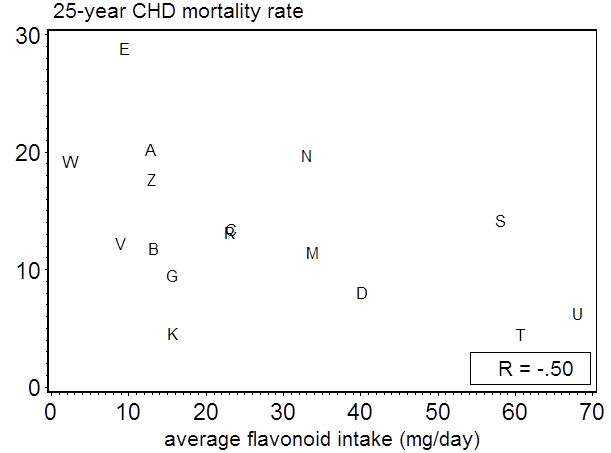
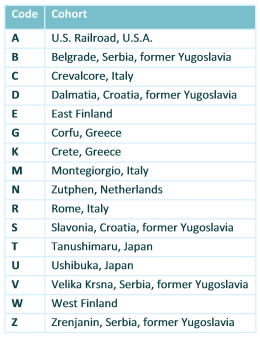

A high intake of animal foods is related to higher long-term CHD mortality

{kind=link}
The Seven Countries Study showed that animal food groups, with the exception of fish, were strongly positively related to 25-year CHD mortality and that plant food, with the exception of potatoes, were inversely related. Of the individual foods, butter, hard margarines and meat were most strongly related to CHD mortality rates. The summary factor score was positive for animal foods and negative for plant foods. The population factor scores were strongly positively correlated with CHD mortality rates. The plant food-based Mediterranean Adequacy Index was inversely related to 25-year CHD mortality rates.
Western, Mediterranean and Japanese dietary patterns
In the 1960s dietary patterns high in animal foods and rich in saturated fat (Western diets) were characterized by a high meat intake in the US, a high dairy (whole fat milk and butter) intake in Finland, a high margarine (hardened fish oils) intake in the Netherlands and a high intake of lard in Slavonia (Croatia). Mediterranean patterns, with olive oil as the main source of fat, were characterized by a high intake of plant foods. The Japanese patterns were high in fish and soy products and had a very low saturated fat intake.
References
Go to all publications from the Seven Countries Study